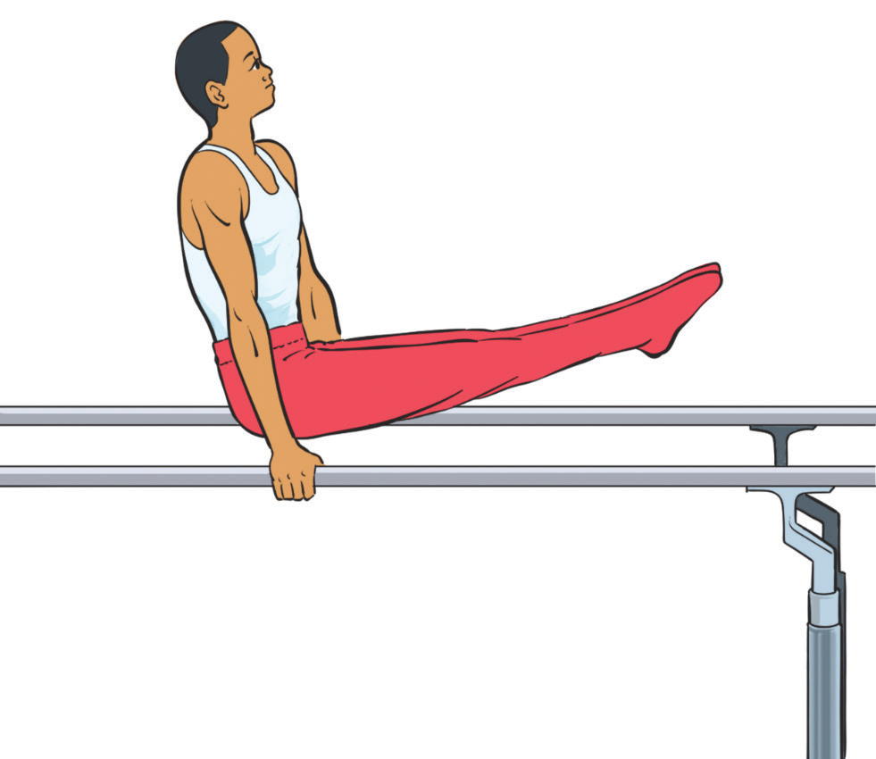

Figure 4.38(b): Back support bars holding
Arabesque hold
A position where the gymnast holds the body in a straight line, balancing on one leg, and lifting the other leg behind them in a horizontal position on the bar. Follow these steps to execute the back arabesque hold:
- (i) Stand tall with feet together and arms at your sides;
- (ii) Focus your eyes forward to help maintain balance;
- (iii) Shift your weight onto your supporting leg;
- (iv) Engage your core for stability;
- (v) Slowly lift the opposite leg straight behind you, Figure 4.39;
- (vi) Point the toes of the raised leg;
- (vii) Extend the same arm as the supporting leg forward;
- (viii) Extend the opposite arm backward or to the side;
- (ix) Keep your body in a straight line and hold the position (5–10 seconds); and
- (x) Lower your leg gently and return to the starting position.